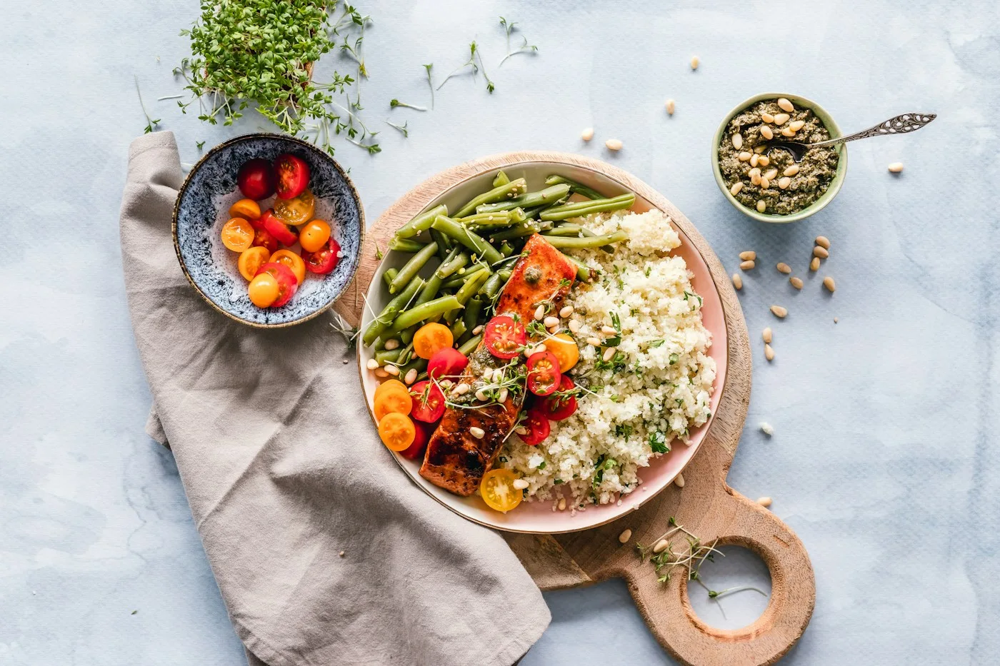

Entrantes
Burrata de temporada
Tomate, albahaca y aceite de oliva. Contiene leche.
14 €
 Brasa & Sal / CONCEPTO NEXORA
Brasa & Sal / CONCEPTO NEXORACOCINA ABIERTA / MESA COMPARTIDA
Cocina de temporada, brasas encendidas y sobremesas que no miran el reloj. Descubre una carta que cambia con el mercado.
EXPLORA / ELIGE / DESCUBRE
Información y precios ilustrativos para esta propuesta de diseño.
No hay resultados con esos filtros. Prueba otra selección.
Entrantes
Tomate, albahaca y aceite de oliva. Contiene leche.
Entrantes
Selección de temporada, romesco. Contiene frutos secos.
Principales
Pregunta por los ingredientes del día. Precio por persona.
Principales
Guarnición de verduras. Contiene pescado.
Postres
Cremosa, con frutos rojos. Contiene leche, huevo y gluten.
Postres
Chocolate negro y aceite. Consulta alérgenos.

UNA EXPERIENCIA CON IDENTIDAD
Producto de temporada. Cocción honesta. Un comedor donde cada plato invita a quedarse. Esta propuesta reúne carta, reserva y experiencia en una sola web.
Hablemos de lo que necesitas ↗UN CAMINO SENCILLO
Encuentra el servicio o propuesta que encaja contigo.
Selecciona una preferencia y genera un resumen claro.
En esta demo, copia o descarga tu solicitud sin enviarla.
HABLEMOS
Cuéntanos qué necesitas y prepara tu consulta con todos los detalles.
Modo demostración. Puedes probar el flujo sin enviar información a ningún negocio.
Campos con * obligatorios. La solicitud se genera en tu navegador; no equivale a una reserva confirmada.
UN POCO MÁS DE INFORMACIÓN
No. Esta marca y sus datos son ficticios. Nexora ha creado la propuesta para enseñar diseño, navegación y funciones comerciales.
Son datos de ejemplo. Una implantación real requiere que el negocio valide precios, disponibilidad y condiciones.
No. Las solicitudes se preparan localmente y se pueden descargar. No se reservan plazas ni se cobra ningún importe.